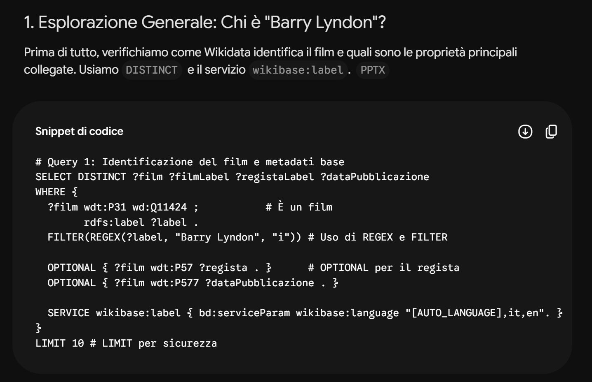
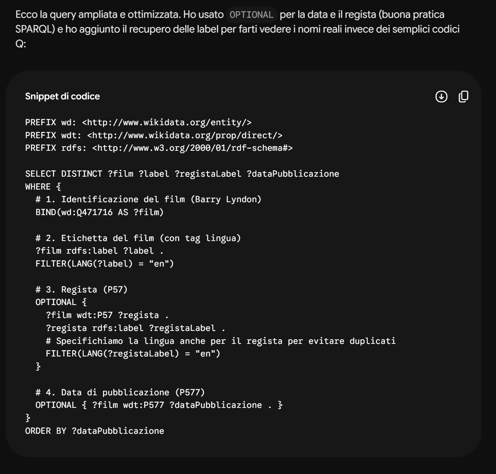
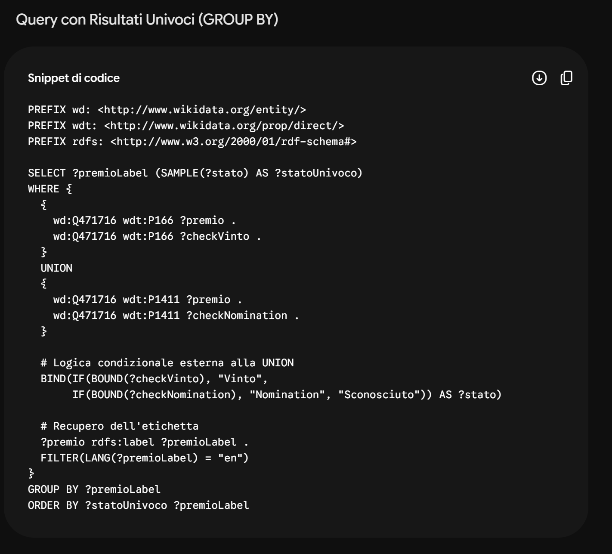
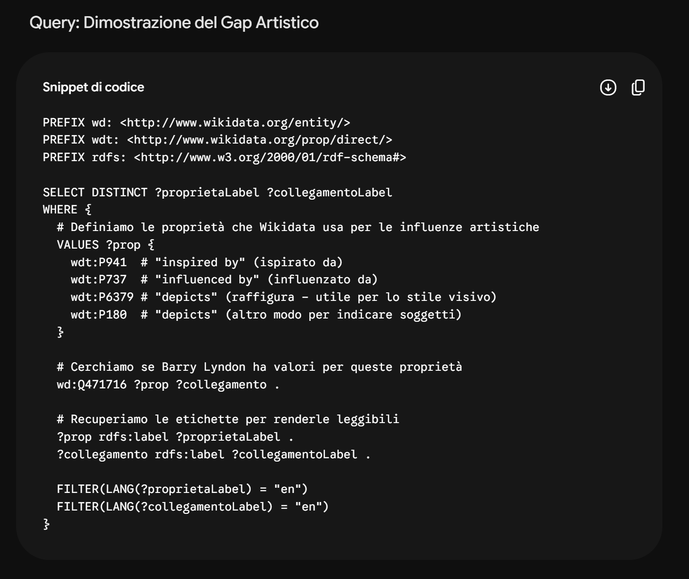
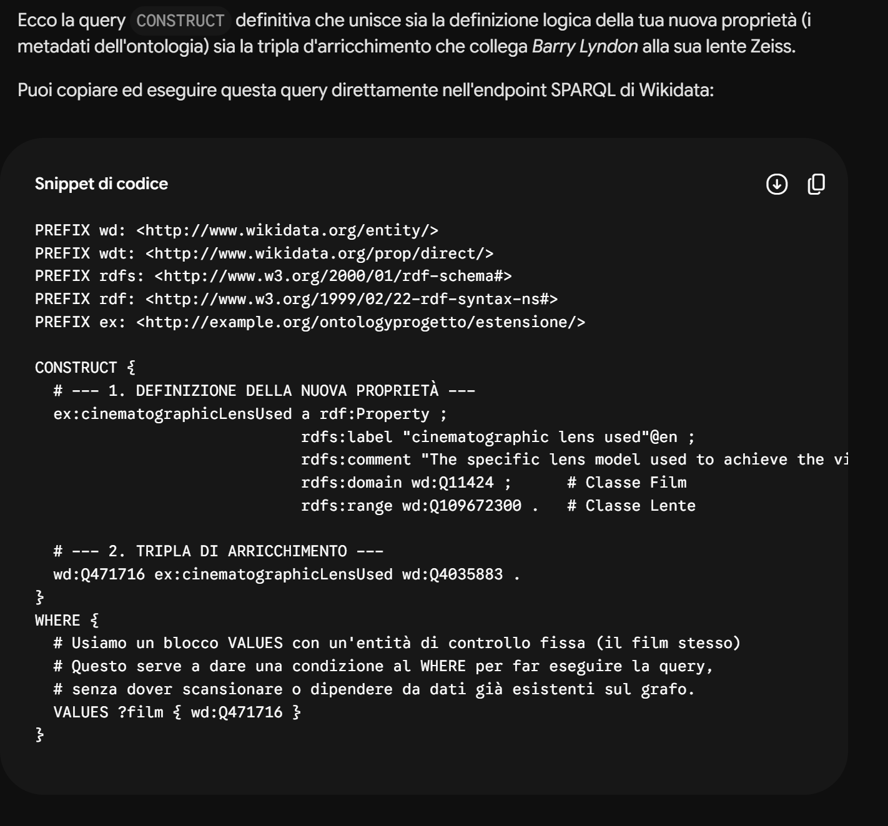
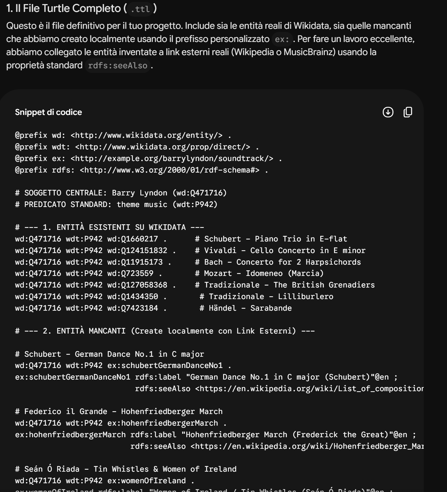

L’intero sviluppo di questo progetto — dalla raccolta delle informazioni storiche fino alla scrittura del codice e alla programmazione del portale web — è stato supportato dall'interazione con i Large Language Models (LLM). L'Intelligenza Artificiale è stata guidata attivamente applicando tre specifiche tecniche di Prompt Engineering:
Zero-shot Prompting: per il recupero diretto di dati storici, metadati standard e query SPARQL di base.
Few-shot Prompting: per forzare i modelli a generare codice (sintassi Turtle o mapping VALUES) seguendo un esempio strutturale da noi fornito.
Chain of Thought (CoT): applicato nei passaggi più critici per costringere il modello a scomporre problemi logici complessi (ottimizzazione di query pesanti ed estensioni TBox) in step sequenziali.
Nota di consultazione: Per ragioni di spazio e leggibilità, la selezione riportata in questa pagina non include il 100% dei messaggi scambiati (test intermedi, correzioni di refusi, ecc.), ma raccoglie i 15 prompt chiave che rappresentano la spina dorsale logica e cronologica del progetto.
Il Confronto: ChatGPT vs Gemini
Ogni prompt strategico è stato sottoposto in parallelo a ChatGPT e Gemini. Questo approccio comparativo ha risposto a due obiettivi fondamentali:
Validazione storiografica (Cross-checking): Intersecare le risposte dei due modelli con fonti terze autorevoli (IMDb, cataloghi museali) per identificare e scartare "allucinazioni" o dati storici errati.
Verifica della competenza semantica: Analizzare criticamente come i due software interpretano le regole del Web Semantico, la formattazione dei grafi RDF generati con CONSTRUCT e la gestione dello scope delle variabili.
Fase 1: Ideazione, Esplorazione e Audit del Grafo Esistente

?film wdt:P31 wd:Q11424 (che significa "l'entità è un film") e usare un FILTER(REGEX(?label, "Barry Lyndon", "i")) per filtrare l'etichetta. Questo rivela che l'ID del film è wd:Q471716.Per ottimizzare e non scansionare miliardi di triple, usiamo la funzione Binto: scrivendo
BIND(wd:Q471716 AS ?film), assegniamo in modo statico e istantaneo l'ID noto alla variabile ?film. Da qui, usiamo blocchi OPTIONAL per estrarre in modo sicuro il regista (wdt:P57) e la data (wdt:P577), applicando FILTER(LANG(?label) = "en") per rimuovere i duplicati delle varie lingue.

(Nota degli autori: dopo alcuni tentativi siamo arrivati a questa risposta funzionante)
Successivamente, usiamo la logica condizionale
BIND(IF(BOUND(?checkVinto), "Vinto", IF(BOUND(?checkNomination), "Nomination", "Sconosciuto")) AS ?stato): BOUND verifica quale dei due binari ha trovato un risultato, e IF assegna la stringa testuale corretta. Infine, usiamo GROUP BY e SAMPLE(?stato) per raggruppare i premi ed eliminare i duplicati causati da fonti multiple.

wd:Q471716 ?p ?valore. Le proprietà in Wikidata sono originariamente codici illeggibili (es. P2061). Per trasformarle in testo, usiamo ?prop wikibase:directClaim ?p. Questa istruzione agisce como un "ponte" che collega il codice usato nel film alla sua definizione ufficiale nel vocabolario RDF, permettendoci di leggerne la rdfs:label. Per rimuovere il rumore degli ID usiamo FILTER(!REGEX(?propLabel, "ID|identifier|identificativo", "i")), mantenendo solo i dati semantici rilevanti.
Domanda: scrivi una query SPARQL per restituire i luoghi di ripresa (filming locations) e il budget del film Barry Lyndon. Utilizza BIND(wd:Q471716 AS ?film) per fissare l’item e recupera i luoghi di ripresa con wdt:P915 e il budget con wdt:P2130. Filtra le etichette in inglese con FILTER(LANG(?locationLabel) = "en"). Se il budget non è presente, la query deve comunque restituire i luoghi di ripresa.
Output atteso: solo la query SPARQL, senza spiegazioni o commenti.
Differenze tra i modelli:
ChatGPT (zero‑shot): genererà direttamente la query. La persistenza della memoria lo aiuta a ricordare che P915 è la proprietà per i luoghi di ripresa e P2130 per il budget senza ulteriori esempi.
Gemini 3.1 Pro: grazie alla finestra di contesto da 1 milione di token e all’integrazione con Google Search, potrebbe consultare dinamicamente le proprietà se non le conosce. In zero‑shot potrebbe comunque fornire la query corretta. In mancanza di memoria persistente, le proprietà potrebbero essere meno immediate se l’argomento non è trattato in sessioni precedenti.
Risposta di ChatGPT:
Dato il prompt zero‑shot, un modello come ChatGPT risponderebbe direttamente con la query richiesta:
SELECT ?locationLabel ?budget WHERE {
BIND(wd:Q471716 AS ?film)
OPTIONAL {
?film wdt:P915 ?location .
?location rdfs:label ?locationLabel .
FILTER(LANG(?locationLabel) = "en")
}
OPTIONAL { ?film wdt:P2130 ?budget . }
}Fase 2: Analisi ed Estrazione della Colonna Sonora
wd:Q471716 wdt:P942 ?entitaMusicale. Recuperando la label in inglese (rdfs:label), otteniamo un elenco molto breve che mostra solo pochissimi compositori, confermando l'assenza di gran parte della colonna sonora.
Fase 3: Analisi ed Estrazione delle Ispirazioni Artistiche
VALUES ?prop { wdt:P941 wdt:P737 wdt:P180 } per dichiarare le tre proprietà da cercare in una sola esecuzione. Interrogando wd:Q471716 ?prop ?collegamento, la query non restituisce alcun risultato, dimostrando che i riferimenti artistici sono un buco informativo totale nel grafo attuale.

Thomas Gainsborough - "The Blue Boy" (wd:Q604761) → per costumi e portamento.
William Hogarth - "The Graham Children" (wd:Q3451328) → composizione visiva delle scene con bambini.
William Hogarth - "Marriage A-la-Mode" (wd:Q5220868) → per la decadenza morale e le scommesse.
William Hogarth - "An Election Entertainment" (wd:Q66970124) → ispirazione per le scene caotiche.
Thomas Gainsborough - "Lady Alston" (wd:Q18937352) → estetica e illuminazione di Lady Lyndon.
wd:Q471716 wdt:P941 ?quadro . nel costrutto CONSTRUCT. All'interno del blocco WHERE, usiamo VALUES ?quadro elencando in modo esplicito i cinque codici "Q" (da wd:Q604761 a wd:Q18937352) che abbiamo estratto dalla documentazione. Questo genererà il codice in sintassi Turtle in cui le entità reali di Wikidata vengono finalmente collegate al film.
Fase 4: Modellazione Ontologica per le Lenti Cinematografiche
FILTER(REGEX(?propLabel, "lens|camera|optical|technique|method|aspect", "i")). Questa espressione regolare analizza tutte le etichette delle proprietà e lascia passare solo quelle che contengono parole chiave tecniche. Poiché la query non restituisce valori idonei, dimostriamo il vuoto informativo.

@prefix wd: <http://www.wikidata.org/entity/> .
@prefix wdt: <http://www.wikidata.org/prop/direct/> .
# SOGGETTO CENTRALE: Barry Lyndon (wd:Q471716)
# PREDICATO: theme music (wdt:P942)
wd:Q471716 wdt:P942 wd:Q1660217 .
wd:Q471716 wdt:P942 wd:Q124151832 .
wd:Q471716 wdt:P942 wd:Q11915173 .
wd:Q471716 wdt:P942 wd:Q723559 .
wd:Q471716 wdt:P942 wd:Q127058368 .
wd:Q471716 wdt:P942 wd:Q1434350 .
wd:Q471716 wdt:P942 wd:Q7423184 .
Valutazione Critica degli LLM: Analisi Comparativa dei Pro e Contro
L’utilizzo di ChatGPT e Gemini come assistenti semantici ha evidenziato come i modelli linguistici necessitino di una costante supervisione umana. Di seguito si sintetizzano i riscontri reali emersi durante lo sviluppo del progetto, evidenziando i limiti strutturali e le risposte sistemiche adottate.
1. Limiti Comuni e Interventi di Correzione Umana (I Contro)
Nonostante l'apparente autonomia dei modelli, in diverse occasioni il flusso di lavoro si è bloccato, richiedendo molteplici riscritture e un intervento umano correttivo e sistematico:
Sia ChatGPT che Gemini hanno mostrato forti difficoltà nel rintracciare i codici "Q" corretti per le risorse più specifiche (come i singoli movimenti dei brani o i dipinti minori). L'analisi ha richiesto una guida umana costante per inserire manualmente gli identificatori corretti estratti da ricerche esterne.
Di fronte a costrutti SPARQL avanzati, i modelli hanno inizialmente generato query non funzionanti. Ad esempio, posizionando erroneamente l'istruzione BIND all'interno dei singoli rami isolati di una UNION, la variabile perdeva lo scope (il raggio d'azione) una volta terminata la clausola. Senza l'iniezione manuale di schemi sintattici preesistenti e corretti, i modelli non sono stati in grado di risolvere autonomamente il problema logico.
Come emerso durante lo sviluppo, i modelli tendono a soffrire di "pigrizia" o perdita di memoria a lungo termine durante la sessione. È stato necessario richiedere più volte la correzione dello stesso codice a causa di risposte troppo brevi, troncate, prive di prefissi obbligatori o affette da imprecisioni sintattiche ripetute.
2. Analisi Comparativa
Nonostante i limiti strutturali, l'oasi di efficienza generata dall'uso combinato dei due strumenti ha offerto vantaggi speculari e complementari se applicati alle giuste fasi della pipeline metodologica:
| Fase del Progetto | ChatGPT (Modello Logico) | Gemini (Modello Connesso) |
|---|---|---|
| Ragionamento e Spiegazioni (CoT) | PRO: Eccellente nella scomposizione concettuale. Spiega alla perfezione la differenza teorica tra TBox (schema della proprietà delle lenti) e ABox (tripla del film). | CONTRO: Più sbrigativo. Tende a fornire il codice finale omettendo i passaggi logici intermedi necessari alla comprensione didattica. |
| Rispetto dei Formati (Few-Shot) | CONTRO: Spesso prolisso. Anche se vincolato da un esempio, tende a reintrodurre preamboli testuali o formattazioni personalizzate che rompono la pulizia del codice Turtle. | PRO: Estremamente rigoroso nel replicare i pattern. Isola il blocco di triple in sintassi Turtle rispettando fedelmente la punteggiatura RDF (punti e virgola, punti). |
| Ancoraggio dei Dati (Uri-Minting) | CONTRO: Forte propensione all'allucinazione degli URL. Ha generato stringhe sintatticamente verosimili per la colonna sonora che si traducevano in link inesistenti (Error 404). | PRO: Navigazione web e recupero delle fonti impeccabile. Ha fornito link reali e attivi verso MusicBrainz, Wikipedia e cataloghi museali per la proprietà rdfs:seeAlso. |
Questa esperienza sul campo dimostra in modo inoppugnabile che gli LLM non sostituiscono le competenze verticali del Digital Humanist, ma fungono esclusivamente da acceleratori di codice. La progettazione concettuale del grafo, la risoluzione strategica dei conflitti di scope nelle query e la validazione storiografica delle fonti rimangono un'esclusiva e inderogabile responsabilità logica dell'operatore umano.